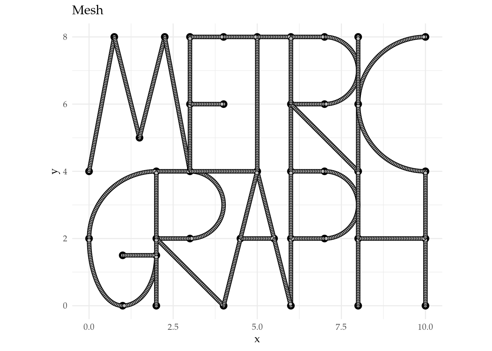
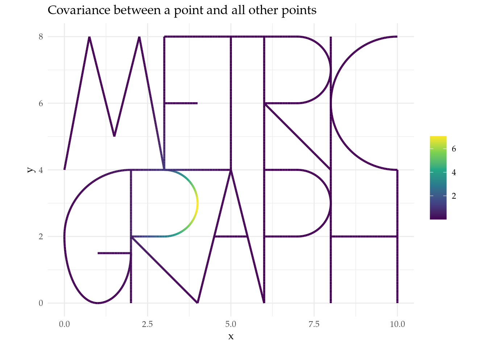
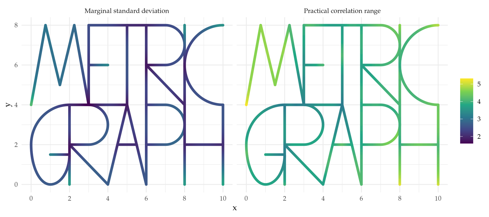
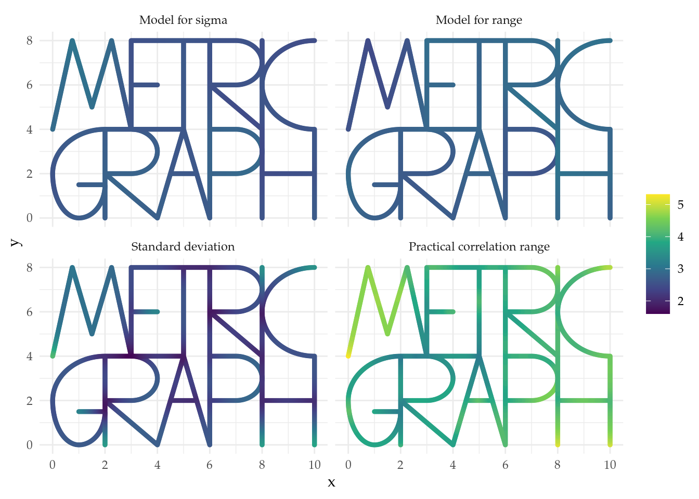
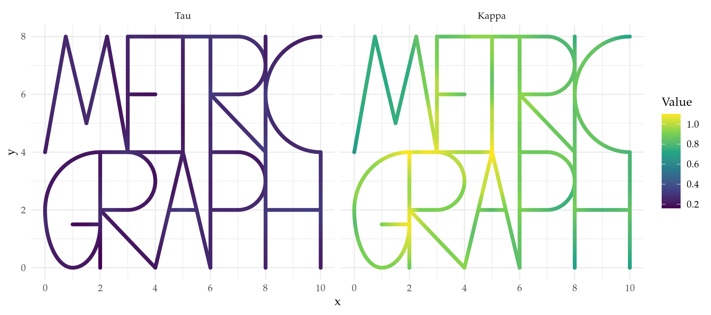
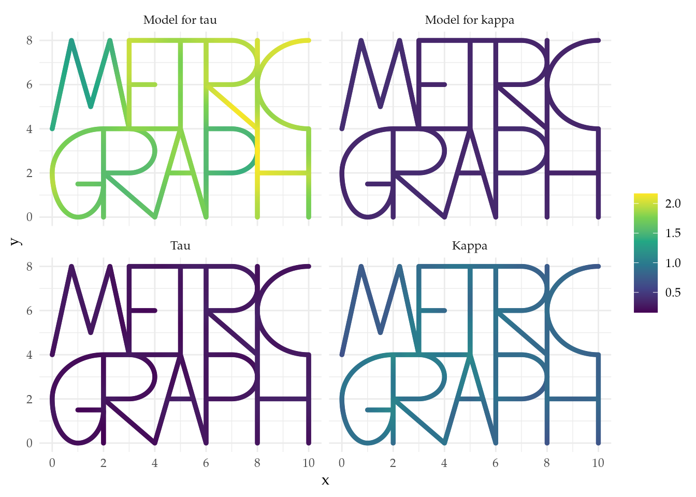
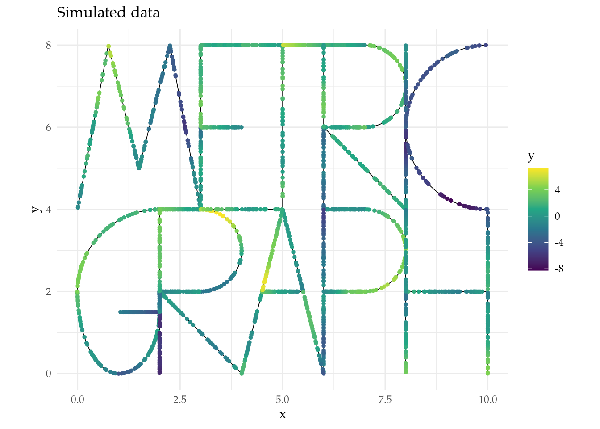
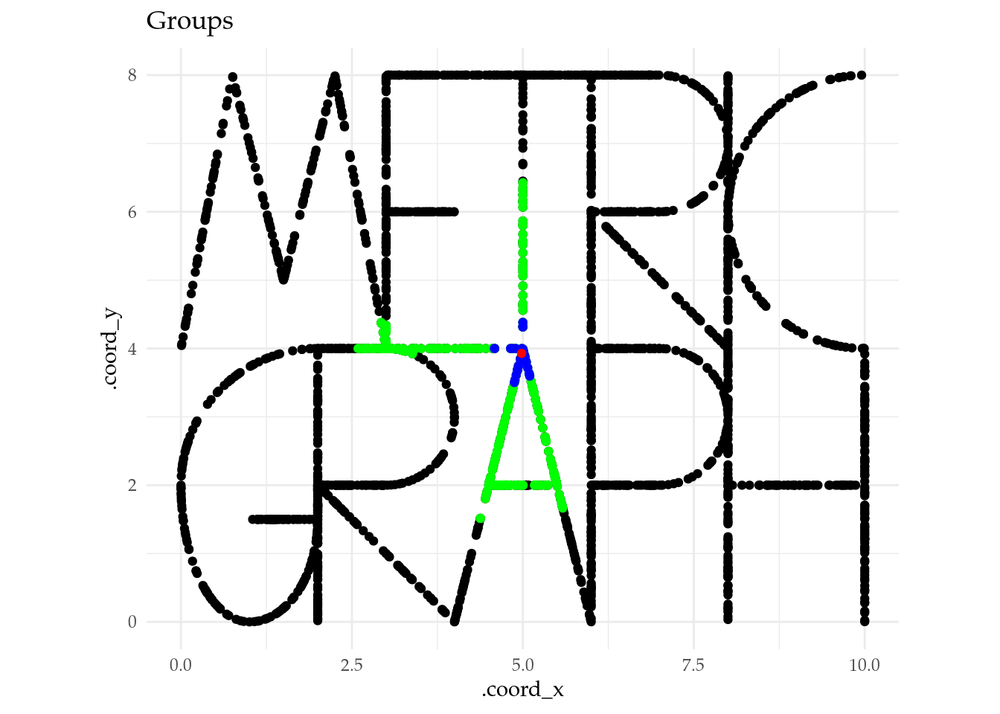
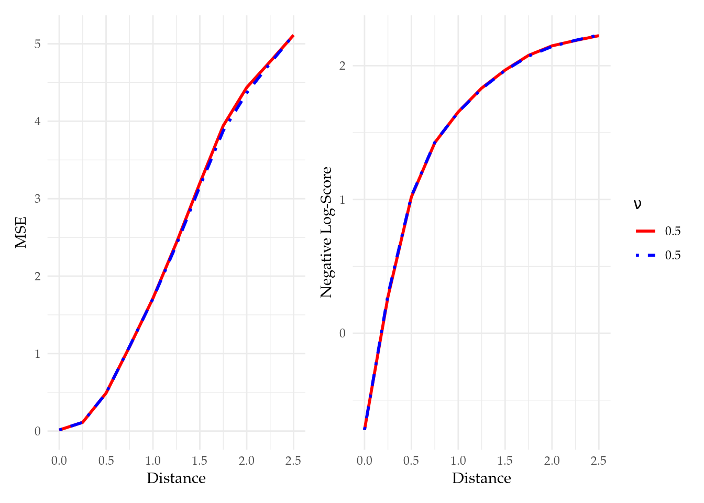

Non-stationarity
Created: 05-07-2024. Last modified: 28-07-2024.
Go back to the About page.
Let us set some global options for all code chunks in this document.
knitr::opts_chunk$set(
message = FALSE, # Disable messages printed by R code chunks
warning = FALSE, # Disable warnings printed by R code chunks
echo = TRUE, # Show R code within code chunks in output
include = TRUE, # Include both R code and its results in output
eval = TRUE, # Evaluate R code chunks
cache = FALSE, # Enable caching of R code chunks for faster rendering
fig.align = "center",
#out.width = "100%",
retina = 2,
error = TRUE,
collapse = FALSE
)
rm(list = ls())
set.seed(1982)1 Import libraries
library(INLA)
library(inlabru)
library(rSPDE)
library(MetricGraph)
library(dplyr)
library(plotly)
library(scales)
library(patchwork)
library(tidyr)
library(here)
library(rmarkdown)
library(grateful) # Cite all loaded packages
rm(list = ls()) # Clear the workspace
set.seed(1982) # Set seed for reproducibility2 Build the graph
edges <- logo_lines() # This is a function from MetricGraph package that returns a list of edges
logo_graph <- metric_graph$new(edges = edges) # Create a new graph object
#logo_graph$prune_vertices()
logo_graph$build_mesh(h = 0.05) # Build the mesh
# Extract the mesh locations in Euclidean coordinates
xypoints <- logo_graph$mesh$V
# Plot graph with mesh
logo_graph$plot(mesh = TRUE) +
ggtitle("Mesh") +
theme_minimal() +
theme(text = element_text(family = "Palatino"))
3 Simulate a Whittle–Matérn field
Below we simulate a Whittle–Matérn field \(\dot{u}\) (cov) from the
model
\[\begin{equation} \label{SPDE}\tag{1} (\kappa^2-\Delta)^{\alpha/2}\tau \dot{u} = \mathcal{W}. \end{equation}\]
We use the matern parameterization, where the parameters
are \(\nu\) (nu), \(\sigma\) (sigma), and \(\rho\) (range), and are
related to the spde parameterization \(\eqref{SPDE}\) as follows.
- \(\alpha = \nu + 1/2\),
- \(\rho = \dfrac{\sqrt{8\nu}}{\kappa}\),
- \(\tau^2 = \dfrac{\Gamma(\nu)}{\sigma^2 \kappa^{2\nu}(4\pi)^{d/2}\Gamma(\nu + d/2)}\).
# Set the parameters
sigma <- 0.1 # Standard deviation
range <- 10 # Range
nu_s <- 1.5 # Smoothness parameter
theta <- c(1, 1, -0.5, 0.5) # Log-regression coefficients
nu_ns <- 1.5 # Smoothness parameter for non-stationarity
cor_threshold <- 0.1 # Define correlation threshold
sigma.e <- 0.1 # Standard deviation of the error termnu = 0.5
kappa = sqrt(8*nu)/range
tau = sqrt(gamma(nu) / (sigma^2 * kappa^(2*nu) * (4*pi)^(1/2) * gamma(nu + 1/2))) #sigma = 1, d = 1
alpha = nu + 1/2
op <- matern.operators(alpha = alpha,
tau = tau,
kappa = kappa,
parameterization = "spde",
graph = logo_graph)
est_cov_matrix <- op$covariance_mesh()
# Precision matrix
Q <- precision(op)
rownumber = 289 # Choose a row number, any berween 1 and dim(est_cov_matrix)[1]
rowfromcov = est_cov_matrix[rownumber, ]
rowfromQ = solve(Q, replace(numeric(dim(Q)[1]), rownumber, 1)) # Another way to get a row from the covariance matrix
aux_covf1 <- logo_graph$plot_function(X = rowfromcov, vertex_size = 1, plotly = TRUE, edge_color = "black", edge_width = 1, line_color = "blue", line_width = 2)
nu = 2.5
kappa = sqrt(8*nu)/range
tau = sqrt(gamma(nu) / (sigma^2 * kappa^(2*nu) * (4*pi)^(1/2) * gamma(nu + 1/2))) #sigma = 1, d = 1
alpha = nu + 1/2
op <- matern.operators(alpha = alpha,
tau = tau,
kappa = kappa,
parameterization = "spde",
graph = logo_graph)
est_cov_matrix <- op$covariance_mesh()
# Precision matrix
Q <- precision(op)
rownumber = 289 # Choose a row number, any berween 1 and dim(est_cov_matrix)[1]
rowfromcov = est_cov_matrix[rownumber, ]
rowfromQ = solve(Q, replace(numeric(dim(Q)[1]), rownumber, 1)) # Another way to get a row from the covariance matrix
aux_covf2 <- logo_graph$plot_function(X = rowfromcov, vertex_size = 1, plotly = TRUE, edge_color = "black", edge_width = 1, line_color = "red", line_width = 2, p = aux_covf1)nu <- nu_s
kappa = sqrt(8*nu)/range
tau = sqrt(gamma(nu) / (sigma^2 * kappa^(2*nu) * (4*pi)^(1/2) * gamma(nu + 1/2))) #sigma = 1, d = 1
alpha = nu + 1/2
# Construct the approximation
op <- matern.operators(alpha = alpha,
tau = tau,
kappa = kappa,
parameterization = "spde",
graph = logo_graph)
# Simulate the field
cov <- as.vector(simulate(op))
est_cov_matrix <- op$covariance_mesh()
# Precision matrix
Q <- precision(op)
rownumber = 289 # Choose a row number, any berween 1 and dim(est_cov_matrix)[1]
rowfromcov = est_cov_matrix[rownumber, ]
rowfromQ = solve(Q, replace(numeric(dim(Q)[1]), rownumber, 1)) # Another way to get a row from the covariance matrix# Plot the field
logo_graph$plot_function(X = cov, vertex_size = 0, plotly = FALSE) +
ggtitle("Simulated field") +
theme_minimal() +
theme(text = element_text(family = "Palatino"))
4 Build a non-stationary covariance function for a generalized Whittle–Matérn field
We use the simulated field to build a non-stationary covariance function for a generalized Whittle–Matérn field \(u\). That is, we consider the model
\[\begin{equation} \label{NS-SPDE}\tag{2} (\kappa^2(s)-\Delta)^{\alpha/2}\tau(s) u = \mathcal{W}, \end{equation}\]
with non-stationary parameters (in the matern
parameterization) given by
\[\begin{equation} \label{logregressions} \begin{aligned} \log(\sigma(s)) &= \theta_1 + \theta_3 \text{cov}(s),\\ \log(\rho(s)) &= \theta_2 + \theta_4 \text{cov}(s). \end{aligned} \end{equation}\]
Take into account that theta \(= (\theta_1, \theta_2, \theta_3,
\theta_4)\).
prepare_B_matrices <- function(B, n.spde, n.theta) {
if (!is.numeric(B)) {
stop("B matrix must be numeric.")
}
if (is.matrix(B)) {
if ((nrow(B) != 1) && (nrow(B) != n.spde)) {
stop(paste("B matrix must have either 1 or", as.character(n.spde), "rows."))
}
if ((ncol(B) != 1) && (ncol(B) != 1 + n.theta)) {
stop(paste("B matrix must have 1 or", as.character(1 +
n.theta), "columns."))
}
if (ncol(B) == 1) {
return(cbind(as.vector(B), matrix(0, n.spde, n.theta)))
} else if (ncol(B) == 1 + n.theta) {
if (nrow(B) == 1) {
return(matrix(as.vector(B), n.spde, 1 + n.theta,
byrow = TRUE
))
} else if (nrow(B) == n.spde) {
return(B)
}
}
} else {
if ((length(B) == 1) || (length(B) == n.spde)) {
return(cbind(B, matrix(0, n.spde, n.theta)))
} else if (length(B) == 1 + n.theta) {
return(matrix(B, n.spde, 1 + n.theta, byrow = TRUE))
} else {
stop(paste(
"Length of B must be 1,", as.character(1 + n.theta),
"or", as.character(n.spde)
))
}
}
stop("Unrecognised structure for B matrix")
}
convert_B_matrices <- function(B.sigma, B.range, n.spde, nu.nominal, d) {
n.theta <- ncol(B.sigma) - 1L
alpha.nominal <- nu.nominal + d / 2
B.sigma <- prepare_B_matrices(
B.sigma, n.spde,
n.theta
)
B.range <- prepare_B_matrices(
B.range, n.spde,
n.theta
)
B.kappa <- cbind(
0.5 * log(8 * nu.nominal) - B.range[, 1],
-B.range[, -1, drop = FALSE]
)
B.tau <- cbind(
0.5 * (lgamma(nu.nominal) - lgamma(alpha.nominal) -
d / 2 * log(4 * pi)) - nu.nominal * B.kappa[, 1] -
B.sigma[, 1],
-nu.nominal * B.kappa[, -1, drop = FALSE] -
B.sigma[, -1, drop = FALSE]
)
return(list(B.tau = B.tau, B.kappa = B.kappa))
}nu = 0.5
B_matrices <- convert_B_matrices(B.sigma, B.range, length(cov), nu, 1)
B.tau <- B_matrices[["B.tau"]]
B.kappa <- B_matrices[["B.kappa"]]
alpha = nu + 1/2
# Construct the approximation
ns_op <- rSPDE::spde.matern.operators(graph = logo_graph,
B.tau = B.tau,
B.kappa = B.kappa,
parameterization = "spde",
theta = theta,
alpha = alpha)
est_cov_matrix <- ns_op$covariance_mesh()
# Precision matrix
Q <- precision(ns_op)
rownumber = 289 # Choose a row number, any berween 1 and dim(est_cov_matrix)[1]
rowfromcov = est_cov_matrix[rownumber, ]
rowfromQ = solve(Q, replace(numeric(dim(Q)[1]), rownumber, 1)) # Another way to get a row from the covariance matrix
aux_covf1 <- logo_graph$plot_function(X = rowfromcov, vertex_size = 1, plotly = TRUE, edge_color = "black", edge_width = 3, line_color = "blue", line_width = 3)
nu = 2.5
B_matrices <- convert_B_matrices(B.sigma, B.range, length(cov), nu, 1)
B.tau <- B_matrices[["B.tau"]]
B.kappa <- B_matrices[["B.kappa"]]
alpha = nu + 1/2
# Construct the approximation
ns_op <- rSPDE::spde.matern.operators(graph = logo_graph,
B.tau = B.tau,
B.kappa = B.kappa,
parameterization = "spde",
theta = theta,
alpha = alpha)
est_cov_matrix <- ns_op$covariance_mesh()
# Precision matrix
Q <- precision(ns_op)
rownumber = 289 # Choose a row number, any berween 1 and dim(est_cov_matrix)[1]
rowfromcov = est_cov_matrix[rownumber, ]
rowfromQ = solve(Q, replace(numeric(dim(Q)[1]), rownumber, 1)) # Another way to get a row from the covariance matrix
aux_covf2 <- logo_graph$plot_function(X = rowfromcov, vertex_size = 1, plotly = TRUE, edge_color = "black", edge_width = 3, line_color = "red", line_width = 3, p = aux_covf1)nu = nu_ns
B_matrices <- convert_B_matrices(B.sigma, B.range, length(cov), nu, 1)
B.tau <- B_matrices[["B.tau"]]
B.kappa <- B_matrices[["B.kappa"]]
alpha = nu + 1/2
# Construct the approximation
ns_op <- rSPDE::spde.matern.operators(graph = logo_graph,
B.tau = B.tau,
B.kappa = B.kappa,
parameterization = "spde",
theta = theta,
alpha = alpha)
# Covariance matrix
est_cov_matrix <- ns_op$covariance_mesh()
# Precision matrix
Q <- precision(ns_op)
rownumber = 289 # Choose a row number, any berween 1 and dim(est_cov_matrix)[1]
rowfromcov = est_cov_matrix[rownumber, ] # Get a row from the covariance matrix
rowfromQ = solve(Q, replace(numeric(dim(Q)[1]), rownumber, 1)) # Another way to get a row from the covariance matrix
sum(rowfromcov - rowfromQ) # Check they are the same## [1] -2.985064e-104.1 Plot the covariance between a point and all other points
# Plot the covariance between a point and all other points
logo_graph$plot_function(X = rowfromQ, vertex_size = 0) +
ggtitle("Covariance between a point and all other points") +
theme_minimal() +
theme(text = element_text(family = "Palatino"))
cfo <- logo_graph$plot_function(X = rowfromcov, vertex_size = 1, plotly = TRUE, edge_color = "black", edge_width = 3, line_color = "darkgreen", line_width = 3, p = aux_covf2) %>%
config(mathjax = 'cdn') %>%
layout(font = list(family = "Palatino"),
showlegend = FALSE,
scene = list(
annotations = list(
list(
x = 3, y = 4, z = 8,
text = TeX("\\nu"),
textangle = 0, ax = 60, ay = 0,
font = list(color = "black", size = 16),
arrowcolor = "white", arrowsize = 1, arrowwidth = 0.1,arrowhead = 1),
list(
x = 3, y = 4, z = 6.5,
text = TeX("\\bullet\\mbox{ 0.5}"),
textangle = 0, ax = 60, ay = 0,
font = list(color = "blue", size = 16),
arrowcolor = "white", arrowsize = 1, arrowwidth = 0.1,arrowhead = 1),
list(
x = 3, y = 4, z = 7,
text = TeX("\\bullet\\mbox{ 1.5}"),
textangle = 0, ax = 60, ay = 0,
font = list(color = "darkgreen", size = 16),
arrowcolor = "white", arrowsize = 1, arrowwidth = 0.1,arrowhead = 1),
list(
x = 3, y = 4, z = 7.5,
text = TeX("\\bullet\\mbox{ 2.5}"),
textangle = 0, ax = 60, ay = 0,
font = list(color = "red", size = 16),
arrowcolor = "white", arrowsize = 1, arrowwidth = 0.1,arrowhead = 1),
list(
x = 3, y = 4, z = 0,
text = TeX("s_0"),
textangle = 0, ax = 0, ay = 15,
font = list(color = "black", size = 16),
arrowcolor = "white", arrowsize = 1, arrowwidth = 0.1,arrowhead = 1)))) %>%
add_trace(x = xypoints[rownumber, 2], y = xypoints[rownumber, 1], z = 0, mode = "markers", type = "scatter3d",
marker = list(size = 4, color = "black", symbol = 104))4.2 Compute the practical correlation range and the standard deviation
# Build the models for sigma and range
model_for_sigma <- exp(B.sigma[,-1]%*%theta)
model_for_range <- exp(B.range[,-1]%*%theta)
# Compute distance matrix on the mesh
logo_graph$compute_geodist_mesh()
# Get the distance matrix
dist_matrix <- logo_graph$mesh$geo_dist
# Initialize vector to store the practical correlation range
est_range = rep(NA, dim(est_cov_matrix)[1])
# Compute the practical correlation range
for (i in 1:dim(est_cov_matrix)[1]) {
est_range[i] <- data.frame(cor = est_cov_matrix[i,], dist = dist_matrix[i,]) %>%
arrange(dist) %>%
filter(cor < cor_threshold) %>%
slice(1) %>%
pull(dist)
}
# Compute the standard deviation
est_sigma <- sqrt(diag(INLA::inla.qinv(Q))) # It can also be computed as sqrt(Matrix::diag(est_cov_matrix))4.3 Plot the practical correlation range and the standard deviation
# Extract the mesh locations in Euclidean coordinates
xypoints <- logo_graph$mesh$V
# Define data frames for plotting
sd_df <- data.frame(x = xypoints[,1], y = xypoints[,2], z = est_sigma, .group = 1)
rho_df <- data.frame(x = xypoints[,1], y = xypoints[,2], z = est_range, .group = 2)
data_param_cov <- rbind(sd_df, rho_df)
group_labels <- c("Marginal standard deviation", "Practical correlation range")
min_x <- min(data_param_cov$x) |> round(2)
max_x <- max(data_param_cov$x) |> round(2)
min_y <- min(data_param_cov$y) |> round(2)
max_y <- max(data_param_cov$y) |> round(2)
# Create a base plot
base_plot <- ggplot() +
geom_point(data = sd_df, aes(x = x, y = y), color = "black", size = 0.5, shape = 1) +
scale_x_continuous(labels = function(x) paste0(x), name = "x", breaks = seq(min_x, max_x, by = 2)) +
scale_y_continuous(labels = function(y) paste0(y), name = "y", breaks = seq(min_y, max_y, by = 2)) +
theme_minimal() +
theme(text = element_text(family = "Palatino"))
# Create individual plots for each group and overlay data points
group_plots <- lapply(unique(data_param_cov$.group), function(gr) {
geom_point(data = subset(data_param_cov, .group == gr), aes(x = x, y = y, color = z), size = 1)
})
# Combine the base plot and the group plots
combined_plot <- base_plot +
facet_wrap(~ .group, ncol = 2, labeller = labeller(.group = function(variable, value) {
return(group_labels[value])
})) + # Specify custom labels for facet_wrap
group_plots +
scale_color_gradient(name = "") +
labs(color = "") +
scale_color_viridis_c(option = "D")
# Print the combined plot
print(combined_plot)
# Define data frames for plotting
sigma_df <- data.frame(x = xypoints[,1], y = xypoints[,2], z = model_for_sigma, .group = 1)
range_df <- data.frame(x = xypoints[,1], y = xypoints[,2], z = model_for_range, .group = 2)
sd_df <- data.frame(x = xypoints[,1], y = xypoints[,2], z = est_sigma, .group = 3)
rho_df <- data.frame(x = xypoints[,1], y = xypoints[,2], z = est_range, .group = 4)
data_param_cov <- rbind(sigma_df, range_df, sd_df, rho_df)
group_labels <- c("Model for sigma", "Model for range", "Standard deviation", "Practical correlation range")
min_x <- min(data_param_cov$x) |> round(2)
max_x <- max(data_param_cov$x) |> round(2)
min_y <- min(data_param_cov$y) |> round(2)
max_y <- max(data_param_cov$y) |> round(2)
# Create a base plot
base_plot <- ggplot() +
geom_point(data = sigma_df, aes(x = x, y = y), color = "black", size = 0.5, shape = 1) +
scale_x_continuous(labels = function(x) paste0(x), name = "x", breaks = seq(min_x, max_x, by = 2)) +
scale_y_continuous(labels = function(y) paste0(y), name = "y", breaks = seq(min_y, max_y, by = 2)) +
theme_minimal() +
theme(text = element_text(family = "Palatino"))
# Create individual plots for each group and overlay data points
group_plots <- lapply(unique(data_param_cov$.group), function(gr) {
geom_point(data = subset(data_param_cov, .group == gr), aes(x = x, y = y, color = z), size = 1)
})
# Combine the base plot and the group plots
combined_plot <- base_plot +
facet_wrap(~ .group, ncol = 2, labeller = labeller(.group = function(variable, value) {
return(group_labels[value])
})) + # Specify custom labels for facet_wrap
group_plots +
scale_color_gradient(name = "") +
labs(color = "") +
scale_color_viridis_c(option = "D")
# Print the combined plot
print(combined_plot)
4.4 Plot tau and kappa
# Extract the mesh locations in Euclidean coordinates
xypoints <- logo_graph$mesh$V
est_kappa <- sqrt(8*nu_ns)/est_range
est_tau <- sqrt(gamma(nu_ns) / (est_sigma^2 * est_kappa^(2*nu_ns) * (4*pi)^(1/2) * gamma(nu_ns + 1/2)))
# Define data frames for plotting
sd_df <- data.frame(x = xypoints[,1], y = xypoints[,2], z = est_tau, .group = 1)
rho_df <- data.frame(x = xypoints[,1], y = xypoints[,2], z = est_kappa, .group = 2)
data_param_cov <- rbind(sd_df, rho_df)
group_labels <- c("Tau", "Kappa")
min_x <- min(data_param_cov$x) |> round(2)
max_x <- max(data_param_cov$x) |> round(2)
min_y <- min(data_param_cov$y) |> round(2)
max_y <- max(data_param_cov$y) |> round(2)
# Create a base plot
base_plot <- ggplot() +
geom_point(data = sd_df, aes(x = x, y = y), color = "black", size = 0.5, shape = 1) +
scale_x_continuous(labels = function(x) paste0(x), name = "x", breaks = seq(min_x, max_x, by = 2)) +
scale_y_continuous(labels = function(y) paste0(y), name = "y", breaks = seq(min_y, max_y, by = 2)) +
theme_minimal() +
theme(text = element_text(family = "Palatino"))
# Create individual plots for each group and overlay data points
group_plots <- lapply(unique(data_param_cov$.group), function(gr) {
geom_point(data = subset(data_param_cov, .group == gr), aes(x = x, y = y, color = z), size = 1)
})
# Combine the base plot and the group plots
combined_plot <- base_plot +
facet_wrap(~ .group, ncol = 2, labeller = labeller(.group = function(variable, value) {
return(group_labels[value])
})) + # Specify custom labels for facet_wrap
group_plots +
scale_color_gradient(name = "") +
labs(color = "Value") +
scale_color_viridis_c(option = "D")
# Print the combined plot
print(combined_plot)
model_for_tau <- exp(B.tau[,-1]%*%theta)
model_for_kappa <- exp(B.kappa[,-1]%*%theta)
# Define data frames for plotting
sigma_df <- data.frame(x = xypoints[,1], y = xypoints[,2], z = model_for_tau, .group = 1)
range_df <- data.frame(x = xypoints[,1], y = xypoints[,2], z = model_for_kappa, .group = 2)
sd_df <- data.frame(x = xypoints[,1], y = xypoints[,2], z = est_tau, .group = 3)
rho_df <- data.frame(x = xypoints[,1], y = xypoints[,2], z = est_kappa, .group = 4)
data_param_cov <- rbind(sigma_df, range_df, sd_df, rho_df)
group_labels <- c("Model for tau", "Model for kappa", "Tau", "Kappa")
min_x <- min(data_param_cov$x) |> round(2)
max_x <- max(data_param_cov$x) |> round(2)
min_y <- min(data_param_cov$y) |> round(2)
max_y <- max(data_param_cov$y) |> round(2)
# Create a base plot
base_plot <- ggplot() +
geom_point(data = sigma_df, aes(x = x, y = y), color = "black", size = 0.5, shape = 1) +
scale_x_continuous(labels = function(x) paste0(x), name = "x", breaks = seq(min_x, max_x, by = 2)) +
scale_y_continuous(labels = function(y) paste0(y), name = "y", breaks = seq(min_y, max_y, by = 2)) +
theme_minimal() +
theme(text = element_text(family = "Palatino"))
# Create individual plots for each group and overlay data points
group_plots <- lapply(unique(data_param_cov$.group), function(gr) {
geom_point(data = subset(data_param_cov, .group == gr), aes(x = x, y = y, color = z), size = 1)
})
# Combine the base plot and the group plots
combined_plot <- base_plot +
facet_wrap(~ .group, ncol = 2, labeller = labeller(.group = function(variable, value) {
return(group_labels[value])
})) + # Specify custom labels for facet_wrap
group_plots +
scale_color_gradient(name = "") +
labs(color = "") +
scale_color_viridis_c(option = "D")
# Print the combined plot
print(combined_plot)
4.5 Simulation
4.6 Simulate and plot the non-stationary field
# Simulate the non-stationary field
u_non_stat <- simulate(ns_op)
# Plot the graph
pl <- logo_graph$plot(vertex_size = 1, vertex_color = "blue") +
ggtitle(latex2exp::TeX("MetricGraph package's logo")) +
theme_minimal() +
theme(text = element_text(family = "Palatino"))
# Plot the non-stationary field
nsp <- logo_graph$plot_function(X = u_non_stat, vertex_size = 0) +
ggtitle("Simulated non-stationary process") +
theme_minimal() +
theme(text = element_text(family = "Palatino"))
plt_aux <- pl + nspxy_points <- logo_graph$mesh$V
df_just_to_plot <- data.frame(x = xy_points[,1], y = xy_points[,2], z = as.vector(u_non_stat))
pbase <- ggplot() +
geom_point(data = df_just_to_plot, aes(x = x, y = y, color = z), size = 1) +
scale_color_gradient(name = "") +
labs(color = "") +
scale_color_viridis_c(option = "D") +
theme_minimal() +
theme(text = element_text(family = "Palatino")) +
ggtitle("Simulated non-stationary process")
ppmss <- pl + pbase4.7 Simulate observations
# Number of observations per edge
obs.per.edge <- 50
obs.loc <- NULL
for(i in 1:logo_graph$nE) {
obs.loc <- rbind(obs.loc,
cbind(rep(i,obs.per.edge), runif(obs.per.edge)))
}
n.obs <- obs.per.edge*logo_graph$nE
# Compute the FEM basis functions on the observation locations
A <- logo_graph$fem_basis(obs.loc)
# Define two covariates
x1 <- sin(obs.loc[,1])
x2 <- sin(obs.loc[,2])
# Simulate observations
Y <- 1 + 2*x1 - 3*x2 + as.vector(A %*% u_non_stat + sigma.e * rnorm(n.obs))
# Create a data frame with the observations
df_data <- data.frame(y = Y, edge_number = obs.loc[,1],
distance_on_edge = obs.loc[,2],
x1 = x1, x2 = x2)4.8 Compare the data before and after adding the observations
# Add the observations to the graph
logo_graph$add_observations(data = df_data, normalized = TRUE, clear_obs = TRUE)
data_after_added <- logo_graph$get_data() %>% mutate(something = 1)
# Add the observations to the graph
logo_graph$add_observations(data = data_after_added, normalized = TRUE, clear_obs = TRUE)
data_after_added2 <- logo_graph$get_data()
# Get edge_number and distance_on_edge to compare
toy1 <- df_data %>% dplyr::select(edge_number, distance_on_edge)
toy2 <- data_after_added %>% rename(distance_on_edge = .distance_on_edge, edge_number = .edge_number) %>% as.data.frame() %>% dplyr::select(edge_number, distance_on_edge)
toy3 <- data_after_added2 %>% rename(distance_on_edge = .distance_on_edge, edge_number = .edge_number) %>% as.data.frame() %>% dplyr::select(edge_number, distance_on_edge)
# Compare them
identical(toy1, toy2)## [1] FALSE## [1] TRUE4.9 Add and plot the simulated data
# Add the observations to the graph
logo_graph$add_observations(data = df_data, normalized = TRUE, clear_obs = TRUE)
# Get the data
data <- logo_graph$get_data()
# Plot the simulated observations
logo_graph$plot(data = "y", vertex_size = 0) +
ggtitle("Simulated data") +
theme_minimal() +
theme(text = element_text(family = "Palatino"))
4.10 Compute the distance matrix and create the groups
# Define aux data frame to compute the distance matrix
aux <- data |>
rename(distance_on_edge = .distance_on_edge, edge_number = .edge_number) |> # Rename the variables (because sf_graph$compute_geodist_PtE() requires so)
as.data.frame() |> # Transform to a data frame (i.e., remove the metric_graph class)
dplyr::select(edge_number, distance_on_edge)
# Compute the distance matrix
distmatrix <- logo_graph$compute_geodist_PtE(PtE = aux,
normalized = TRUE,
include_vertices = FALSE)
# Define the distance vector
distance = seq(from = 0, to = 2.5, by = 0.25)
GROUPS <- list()
for (j in 1:length(distance)) {
GROUPS[[j]] = list()
for (i in 1:nrow(aux)) {
GROUPS[[j]][[i]] <- which(as.vector(distmatrix[i, ]) <= distance[j])
}
}4.11 Check groups
indexofinterest <- 2000 # Any number between 1 and nrow(data)
pointofinterest <- GROUPS[[3]][[indexofinterest]]
pointofinterest2 <- GROUPS[[11]][[indexofinterest]]
ggplot() +
geom_point(data = data, aes(x = .coord_x, y = .coord_y), color = "black") +
geom_point(data = data[pointofinterest2, ], aes(x = .coord_x, y = .coord_y), color = "green") +
geom_point(data = data[pointofinterest, ], aes(x = .coord_x, y = .coord_y), color = "blue") +
geom_point(data = data[indexofinterest, ], aes(x = .coord_x, y = .coord_y), color = "red") +
ggtitle("Groups") +
theme_minimal() +
theme(text = element_text(family = "Palatino")) +
coord_fixed()
4.12 Fit the stationary model
rspde_model_stat <- rspde.metric_graph(logo_graph,
parameterization = "matern",
nu = nu_ns)
data_rspde_bru_stat <- graph_data_rspde(rspde_model_stat,
loc_name = "loc")
cmp_stat <- y ~ -1 +
Intercept(1) +
x1 +
x2 +
field(loc, model = rspde_model_stat)
rspde_fit_stat <-
bru(cmp_stat,
data = data_rspde_bru_stat[["data"]],
family = "gaussian",
options = list(verbose = FALSE)
)
summary(rspde_fit_stat)## inlabru version: 2.11.1.9001
## INLA version: 24.06.27
## Components:
## Intercept: main = linear(1), group = exchangeable(1L), replicate = iid(1L)
## x1: main = linear(x1), group = exchangeable(1L), replicate = iid(1L)
## x2: main = linear(x2), group = exchangeable(1L), replicate = iid(1L)
## field: main = cgeneric(loc), group = exchangeable(1L), replicate = iid(1L)
## Likelihoods:
## Family: 'gaussian'
## Data class: 'metric_graph_data', 'list'
## Response class: 'numeric'
## Predictor: y ~ .
## Used components: effects[Intercept, x1, x2, field], latent[]
## Time used:
## Pre = 0.352, Running = 1.03, Post = 0.0836, Total = 1.47
## Fixed effects:
## mean sd 0.025quant 0.5quant 0.975quant mode kld
## Intercept 1.457 0.443 0.582 1.457 2.333 1.457 0
## x1 2.017 0.019 1.981 2.017 2.054 2.017 0
## x2 -2.986 0.028 -3.040 -2.986 -2.932 -2.986 0
##
## Random effects:
## Name Model
## field CGeneric
##
## Model hyperparameters:
## mean sd 0.025quant 0.5quant
## Precision for the Gaussian observations 97.634 3.405 91.088 97.580
## Theta1 for field 0.917 0.101 0.724 0.915
## Theta2 for field 0.969 0.076 0.824 0.968
## 0.975quant mode
## Precision for the Gaussian observations 104.49 97.481
## Theta1 for field 1.12 0.905
## Theta2 for field 1.12 0.961
##
## Deviance Information Criterion (DIC) ...............: -3581.30
## Deviance Information Criterion (DIC, saturated) ....: 3001.44
## Effective number of parameters .....................: 598.94
##
## Watanabe-Akaike information criterion (WAIC) ...: -3571.05
## Effective number of parameters .................: 505.61
##
## Marginal log-Likelihood: 938.31
## is computed
## Posterior summaries for the linear predictor and the fitted values are computed
## (Posterior marginals needs also 'control.compute=list(return.marginals.predictor=TRUE)')## mean sd 0.025quant 0.5quant 0.975quant mode
## std.dev 2.51338 0.254858 2.06511 2.49421 3.06457 2.44796
## range 2.64390 0.200997 2.28268 2.63141 3.07140 2.600214.13 Fit the non-stationary model
rspde_model_nonstat <- rspde.metric_graph(logo_graph,
B.sigma = B.sigma,
B.range = B.range,
parameterization = "matern",
nu = nu_ns)
data_rspde_bru_nonstat <- graph_data_rspde(rspde_model_nonstat,
loc_name = "loc")
cmp_nonstat <- y ~ -1 +
Intercept(1) +
x1 +
x2 +
field(loc, model = rspde_model_nonstat)
rspde_fit_nonstat <-
bru(cmp_nonstat,
data = data_rspde_bru_nonstat[["data"]],
family = "gaussian",
options = list(verbose = FALSE)
)
summary(rspde_fit_nonstat)## inlabru version: 2.11.1.9001
## INLA version: 24.06.27
## Components:
## Intercept: main = linear(1), group = exchangeable(1L), replicate = iid(1L)
## x1: main = linear(x1), group = exchangeable(1L), replicate = iid(1L)
## x2: main = linear(x2), group = exchangeable(1L), replicate = iid(1L)
## field: main = cgeneric(loc), group = exchangeable(1L), replicate = iid(1L)
## Likelihoods:
## Family: 'gaussian'
## Data class: 'metric_graph_data', 'list'
## Response class: 'numeric'
## Predictor: y ~ .
## Used components: effects[Intercept, x1, x2, field], latent[]
## Time used:
## Pre = 0.171, Running = 1.03, Post = 0.0918, Total = 1.29
## Fixed effects:
## mean sd 0.025quant 0.5quant 0.975quant mode kld
## Intercept 1.464 0.452 0.574 1.464 2.356 1.464 0
## x1 2.020 0.019 1.983 2.020 2.056 2.020 0
## x2 -2.982 0.027 -3.036 -2.982 -2.928 -2.982 0
##
## Random effects:
## Name Model
## field CGeneric
##
## Model hyperparameters:
## mean sd 0.025quant 0.5quant
## Precision for the Gaussian observations 97.703 3.459 91.416 97.530
## Theta1 for field 0.923 0.112 0.707 0.921
## Theta2 for field 0.950 0.084 0.789 0.949
## Theta3 for field 0.150 1.760 -3.073 0.075
## Theta4 for field 0.948 1.259 -1.359 0.894
## 0.975quant mode
## Precision for the Gaussian observations 105.02 96.913
## Theta1 for field 1.15 0.914
## Theta2 for field 1.12 0.943
## Theta3 for field 3.84 -0.276
## Theta4 for field 3.58 0.644
##
## Deviance Information Criterion (DIC) ...............: -3580.70
## Deviance Information Criterion (DIC, saturated) ....: 2987.41
## Effective number of parameters .....................: 593.64
##
## Watanabe-Akaike information criterion (WAIC) ...: -3574.44
## Effective number of parameters .................: 498.29
##
## Marginal log-Likelihood: 941.15
## is computed
## Posterior summaries for the linear predictor and the fitted values are computed
## (Posterior marginals needs also 'control.compute=list(return.marginals.predictor=TRUE)')## mean sd 0.025quant 0.5quant 0.975quant mode
## Theta1.matern 0.923032 0.1123650 0.706836 0.9213510 1.14925 0.914079
## Theta2.matern 0.950082 0.0836954 0.789143 0.9488000 1.11867 0.943246
## Theta3.matern 0.149739 1.7598900 -3.072910 0.0748877 3.83566 -0.275777
## Theta4.matern 0.947900 1.2594500 -1.358860 0.8944620 3.58530 0.6442234.14 Cross-validation
mse.stat <- mse.nonstat <- ls.stat <- ls.nonstat <- rep(0,length(distance))
# cross-validation for-loop
for (j in 1:length(distance)) {
# cross-validation of the stationary model
cv.stat <- inla.group.cv(rspde_fit_stat, groups = GROUPS[[j]])
# cross-validation of the nonstationary model
cv.nonstat <- inla.group.cv(rspde_fit_nonstat, groups = GROUPS[[j]])
# obtain MSE and LS
mse.stat[j] <- mean((cv.stat$mean - data$y)^2)
mse.nonstat[j] <- mean((cv.nonstat$mean - data$y)^2)
ls.stat[j] <- mean(log(cv.stat$cv))
ls.nonstat[j] <- mean(log(cv.nonstat$cv))
}4.15 Plot cross-validation results
# Create data frames
mse_df <- data.frame(
distance,
Statnu0.5 = mse.stat,
Nonstatnu0.5 = mse.nonstat
)
ls_df <- data.frame(
distance,
Statnu0.5 = -ls.stat,
Nonstatnu0.5 = -ls.nonstat
)
# Convert to long format
mse_long <- mse_df %>%
pivot_longer(cols = -distance, names_to = "nu", values_to = "MSE")
ls_long <- ls_df %>%
pivot_longer(cols = -distance, names_to = "nu", values_to = "LogScore")
# Update the label mappings with the new legend title
label_mapping <- c(
"Statnu0.5" = "0.5",
"Nonstatnu0.5" = "0.5"
)
# Define color and linetype mapping
color_mapping <- c(
"Statnu0.5" = "blue",
"Nonstatnu0.5" = "red"
)
linetype_mapping <- c(
"Statnu0.5" = "dotdash",
"Nonstatnu0.5" = "solid"
)
# Plot MSE
mse_plot <- ggplot(mse_long, aes(x = distance, y = MSE, color = nu, linetype = nu)) +
geom_line(linewidth = 1) +
labs(y = "MSE", x = "Distance") +
scale_color_manual(values = color_mapping, labels = label_mapping, name = expression(nu)) +
scale_linetype_manual(values = linetype_mapping, labels = label_mapping, name = expression(nu)) +
theme_minimal() +
theme(text = element_text(family = "Palatino"))
# Plot negative log-score
ls_plot <- ggplot(ls_long, aes(x = distance, y = LogScore, color = nu, linetype = nu)) +
geom_line(linewidth = 1) +
labs(y = "Negative Log-Score", x = "Distance") +
scale_color_manual(values = color_mapping, labels = label_mapping, name = expression(nu)) +
scale_linetype_manual(values = linetype_mapping, labels = label_mapping, name = expression(nu)) +
theme_minimal() +
theme(text = element_text(family = "Palatino"))
# Combine plots with a shared legend at the top in a single line
combined_plot <- mse_plot + ls_plot +
plot_layout(guides = 'collect') &
theme(legend.position = 'right') &
guides(color = guide_legend(nrow = 2), linetype = guide_legend(nrow = 1))
# Display combined plot
print(combined_plot)
5 References
We used R version 4.4.0 (R Core Team 2024) and the following R packages: ggtext v. 0.1.2 (Wilke and Wiernik 2022), gridExtra v. 2.3 (Auguie 2017), here v. 1.0.1 (Müller 2020), htmltools v. 0.5.8.1 (Cheng et al. 2024), INLA v. 24.6.27 (Rue, Martino, and Chopin 2009; Lindgren, Rue, and Lindström 2011; Martins et al. 2013; Lindgren and Rue 2015; De Coninck et al. 2016; Rue et al. 2017; Verbosio et al. 2017; Bakka et al. 2018; Kourounis, Fuchs, and Schenk 2018), inlabru v. 2.11.1.9001 (Yuan et al. 2017; Bachl et al. 2019), knitr v. 1.47 (Xie 2014, 2015, 2024), latex2exp v. 0.9.6 (Meschiari 2022), listviewer v. 4.0.0 (de Jong, Gainer, and Russell 2023), mapview v. 2.11.2 (Appelhans et al. 2023), Matrix v. 1.6.5 (Bates, Maechler, and Jagan 2024), MetricGraph v. 1.3.0.9000 (Bolin, Simas, and Wallin 2023b, 2023a, 2023c, 2024; Bolin et al. 2023), patchwork v. 1.2.0 (Pedersen 2024), plotly v. 4.10.4 (Sievert 2020), plotrix v. 3.8.4 (J 2006), reshape2 v. 1.4.4 (Wickham 2007), rmarkdown v. 2.27 (Xie, Allaire, and Grolemund 2018; Xie, Dervieux, and Riederer 2020; Allaire et al. 2024), rSPDE v. 2.3.3.9000 (Bolin and Kirchner 2020; Bolin and Simas 2023; Bolin, Simas, and Xiong 2023), scales v. 1.3.0 (Wickham, Pedersen, and Seidel 2023), sf v. 1.0.16 (Pebesma 2018; Pebesma and Bivand 2023), tidyverse v. 2.0.0 (Wickham et al. 2019), TSstudio v. 0.1.7 (Krispin 2023), xaringanExtra v. 0.8.0 (Aden-Buie and Warkentin 2024).